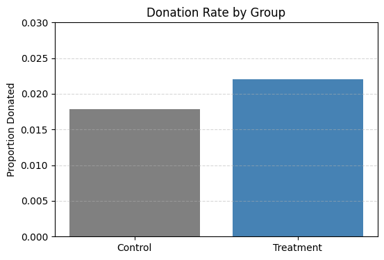
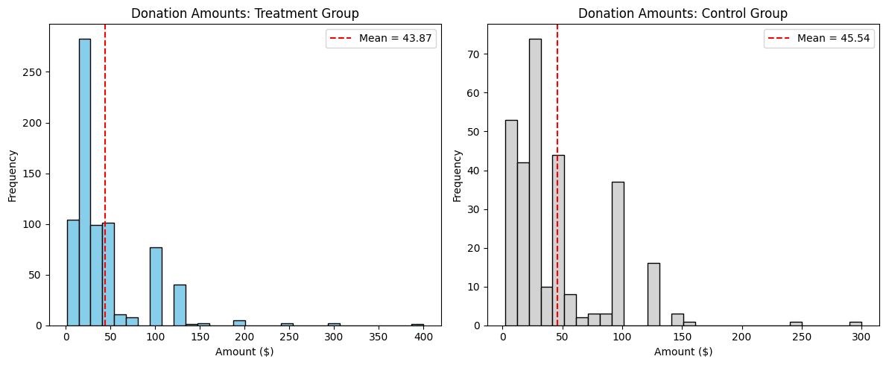
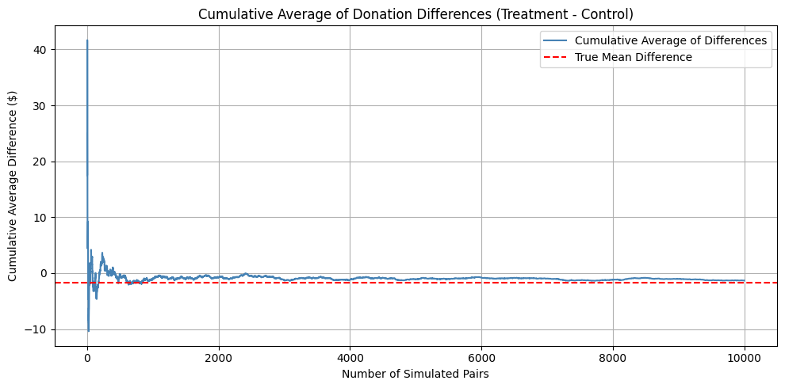

A Replication of Karlan and List (2007)
Introduction
Dean Karlan at Yale and John List at the University of Chicago conducted a field experiment to test the effectiveness of different fundraising letters. They sent out 50,000 fundraising letters to potential donors, randomly assigning each letter to one of three treatments: a standard letter, a matching grant letter, or a challenge grant letter. They published the results of this experiment in the American Economic Review in 2007. The article and supporting data are available from the AEA website and from Innovations for Poverty Action as part of Harvard’s Dataverse.
The study found that announcing a matching grant significantly increased both the likelihood of donation and the average amount given. However, increasing the match ratio—such as from 1:1 to 3:1—did not yield any additional gains in giving. Interestingly, the effectiveness of matching grants also varied by political geography: donors in Republican-leaning (“red”) states were more responsive than those in Democratic-leaning (“blue”) states. These results challenge conventional fundraising wisdom and offer practical insights for designing more effective donation campaigns.
This project aims to replicate their findings.
Data
Data Description
This dataset originates from the field experiment conducted by Karlan and List (2007), in which 50,083 prior donors were sent fundraising letters randomly assigned to different treatments. Each row represents one individual who received a solicitation letter.
Dataset Overview
- Total observations: 50,083
- Unit of observation: Individual donor
- Design: Randomized field experiment with control and treatment groups
Balance Test
As an ad hoc test of the randomization mechanism, I provide a series of tests that compare aspects of the treatment and control groups to assess whether they are statistically significantly different from one another.
T-test vs. Linear Regression
To verify whether the random assignment was successful, we tested a few non-outcome variables to see if treatment and control groups differ significantly at the 95% confidence level. This helps us confirm whether any observed treatment effects later can be attributed to the intervention itself, not to pre-existing group differences.
We tested four variables: - mrm2 (months since last donation) - freq (number of prior donations) - amountchange (change in donation amount) - female (gender)
Hypothesis
For each variable, we test:
- Null hypothesis (H₀): There is no difference in means between treatment and control groups.
- Alternative hypothesis (H₁): There is a difference in means between the groups.
T-test Results
| Feature | Mean | Std | T-statistic | P-value | 95% Confidence Interval |
|---|---|---|---|---|---|
mrm2 |
13.007 | 12.081 | 0.119 | 0.905 | (-0.211, 0.238) |
freq |
8.039 | 11.394 | -0.111 | 0.912 | (-0.224, 0.200) |
amountchange |
-52.672 | 1267.239 | 0.527 | 0.598 | (-17.216, 29.877) |
female |
0.278 | 0.448 | -1.758 | 0.079 | (-0.016, 0.001) |
All p-values are above 0.05, so we fail to reject the null hypothesis. There is no statistically significant difference between the treatment and control groups for any of these variables, indicating that random assignment was successful.
T-test Code
# For 'mrm2' as an example
import pandas as pd
import numpy as np
from scipy import stats
data = pd.read_stata("karlan_list_2007.dta")
df_treatment = data[data['treatment'] == 1]['mrm2'].dropna()
df_control = data[data['treatment'] == 0]['mrm2'].dropna()
t_stat, p_val = stats.ttest_ind(df_treatment, df_control, equal_var=True)
print(f"T-statistic: {t_stat:.3f}")
print(f"P-value: {p_val:.4f}")
mean_diff = df_treatment.mean() - df_control.mean()
n1, n2 = len(df_treatment), len(df_control)
s1, s2 = df_treatment.std(ddof=1), df_control.std(ddof=1)
sp = np.sqrt(((n1 - 1)*s1**2 + (n2 - 1)*s2**2) / (n1 + n2 - 2))
se = sp * np.sqrt(1/n1 + 1/n2)
t_crit = stats.t.ppf(0.975, df=n1 + n2 - 2)
ci_low = mean_diff - t_crit * se
ci_high = mean_diff + t_crit * se
print(f"\nMean Difference: {mean_diff:.3f}")
print(f"95% Confidence Interval: ({ci_low:.3f}, {ci_high:.3f})")Linear Regression Validation
To confirm the t-test results, we also ran simple linear regressions for each variable using the treatment indicator as the independent variable. This allows us to check whether the coefficient on treatment (i.e., the mean difference between groups) matches the value from the t-test.
Regression Model
For each variable (e.g., mrm2), we estimate the model: \[
Y_i = \beta_0 + \beta_1 \cdot \text{treatment}_i + \epsilon_i
\]
Where:
- \(Y_i\) is the outcome variable (e.g.,
mrm2,freq, etc.) - \(\text{treatment}_i = 1\) if the observation is in the treatment group, and \(0\) otherwise
- \(\beta_1\) represents the difference in means between the treatment and control groups
If the coefficient of treatment is not statistically significant, it means there is no difference between the groups, which supports the randomization.
The p-value and 95% confidence interval should match the t-test results exactly.
Regression Code
import statsmodels.api as sm
# Prepare data
data = pd.read_stata("karlan_list_2007.dta")
df_clean = data[['mrm2', 'treatment']].dropna()
# Define X and y
X = sm.add_constant(df_clean['treatment']) # Adds intercept
y = df_clean['mrm2']
# Fit the model
model = sm.OLS(y, X).fit()
# Print regression result
print(model.summary())For mrm2: The coefficient for treatment is 0.009, with a p-value of 0.940, which is exactly consistent with the t-test result. The 95% confidence interval also matches.
So the treatment group and the control group prove to be randomly selected and have no group differences.
Experimental Results
Charitable Contribution Made
First, I analyze whether matched donations lead to an increased response rate of making a donation.
The bar chart below shows the proportion of people who donated in each group.

Impact of Treatment on Donation Behavior
We tested whether individuals who received a treatment letter (with a matching grant offer) were more likely to make a charitable donation compared to those who received a standard control letter.
T-test Code
df_treatment = data[data['treatment'] == 1]['gave'].dropna()
df_control = data[data['treatment'] == 0]['gave'].dropna()
t_stat, p_val = stats.ttest_ind(df_treatment, df_control, equal_var=True)
print(f"T-statistic: {t_stat:.3f}")
print(f"P-value: {p_val:.4f}")
mean_diff = df_treatment.mean() - df_control.mean()
n1, n2 = len(df_treatment), len(df_control)
s1, s2 = df_treatment.std(ddof=1), df_control.std(ddof=1)
sp = np.sqrt(((n1 - 1)*s1**2 + (n2 - 1)*s2**2) / (n1 + n2 - 2))
se = sp * np.sqrt(1/n1 + 1/n2)
t_crit = stats.t.ppf(0.975, df=n1 + n2 - 2)
ci_low = mean_diff - t_crit * se
ci_high = mean_diff + t_crit * se
print(f"\nMean Difference: {mean_diff:.3f}")
print(f"95% Confidence Interval: ({ci_low:.3f}, {ci_high:.3f})")A t-test comparing the proportion of donors between the two groups revealed a statistically significant difference: individuals in the treatment group were more likely to donate. The mean difference in donation rates was 0.004, with a t-statistic of 3.101 and a p-value of 0.0019. The 95% confidence interval for the difference was (0.002, 0.007), which does not include zero — providing strong evidence that the treatment had a real effect.
To confirm this result, we ran a bivariate linear regression where the outcome variable was a binary indicator of whether a donation was made.
Regression Code
df_clean = data[['gave', 'treatment']].dropna()
X = sm.add_constant(df_clean['treatment'])
y = df_clean['gave']
model = sm.OLS(y, X).fit()
print(model.summary())The coefficient on the treatment variable was 0.0042, with a p-value of 0.002, and the 95% confidence interval was also (0.002, 0.007). This perfectly aligns with the t-test results and confirms that the treatment increased the likelihood of giving.
This result supports the idea that including a matching grant offer in a donation appeal can meaningfully influence behavior. Even though the financial amount offered as a match was the same, simply presenting the opportunity to have one’s donation matched significantly increased the chance that someone would donate at all.
In behavioral terms, this suggests that people respond to cues of increased impact — like knowing their donation will be matched. It may enhance the perceived effectiveness or social validation of their gift. This finding highlights how small changes in how we ask for donations can significantly affect participation rates.
Probit Regression Analysis
To better understand the impact of the treatment on donation behavior, we estimated a probit regression where the binary outcome variable was whether or not a donation was made (gave), and the explanatory variable was the assignment to the treatment group.
Code
df_clean = data[['gave', 'treatment']].dropna()
X = sm.add_constant(df_clean['treatment'])
y = df_clean['gave']
probit_model = sm.Probit(y, X).fit()
print(probit_model.summary())The estimated coefficient on the treatment variable is 0.0868, with a z-statistic of 3.113 and a p-value of 0.002, indicating that the effect is statistically significant at the 1% level. The 95% confidence interval for the coefficient is (0.032, 0.141), which excludes zero.
This result replicates Table 3, Column 1 of Karlan & List (2007), confirming that individuals in the treatment group were significantly more likely to make a charitable donation than those in the control group.
The positive and significant coefficient on treatment suggests that receiving a fundraising letter with a matching grant offer makes people more likely to donate, even after controlling for random assignment through a nonlinear probability model.
In simpler terms, this shows that human behavior is sensitive to perceived impact. When people are told that their donation will be matched by someone else, they are more motivated to act. This finding reinforces the behavioral insight that the way a request is framed — even without changing the actual cost — can meaningfully affect decision-making.
This has real-world implications for how nonprofits design their appeals: adding a matching offer not only increases donation amounts, but also boosts the likelihood that people will give at all.
Differences between Match Rates
Next, I assess the effectiveness of different sizes of matched donations on the response rate.
We test whether higher match ratios (2:1, 3:1) increase the probability of donation compared to a baseline 1:1 match. The following T-tests compare donation rates between these match conditions.
T-test Code
# Filter for treatment group with valid ratio and donation outcome
df_ratio = data[(data['treatment'] == 1) & (data['ratio'].notnull()) & (data['gave'].notnull())]
# Split by match ratio
gave_11 = df_ratio[df_ratio['ratio'] == 1]['gave'].dropna()
gave_21 = df_ratio[df_ratio['ratio'] == 2]['gave'].dropna()
gave_31 = df_ratio[df_ratio['ratio'] == 3]['gave'].dropna()
# Donation rates
mean_11 = gave_11.mean()
mean_21 = gave_21.mean()
mean_31 = gave_31.mean()
print("Donation Rates:")
print(f"1:1 = {mean_11:.4f}")
print(f"2:1 = {mean_21:.4f}")
print(f"3:1 = {mean_31:.4f}")
# T-tests
print("\nT-test Results:")
t_21, p_21 = stats.ttest_ind(gave_21, gave_11, equal_var=False)
t_31, p_31 = stats.ttest_ind(gave_31, gave_11, equal_var=False)
t_32, p_32 = stats.ttest_ind(gave_31, gave_21, equal_var=False)
print(f"2:1 vs 1:1 → T = {t_21:.3f}, p = {p_21:.4f}")
print(f"3:1 vs 1:1 → T = {t_31:.3f}, p = {p_31:.4f}")
print(f"3:1 vs 2:1 → T = {t_32:.3f}, p = {p_32:.4f}")- T-test Results:
- 2:1 vs 1:1 → T = 0.965, p = 0.3345
- 3:1 vs 1:1 → T = 1.015, p = 0.3101
- 3:1 vs 2:1 → T = 0.050, p = 0.9600
Although the donation rates appear slightly higher for the 2:1 and 3:1 match offers (2.26% and 2.27%) compared to the 1:1 match (2.07%), the differences are not statistically significant. All p-values are far above the 0.05 threshold, meaning we cannot reject the null hypothesis of equal donation probabilities between match ratio groups.
We now assess the effect of different match ratios on donation behavior using a linear regression model. We create dummy variables for 2:1 and 3:1 match ratios, using 1:1 as the reference group.
Regression Code
# Filter treatment group and prepare ratio dummies
df_ratio = data[(data['treatment'] == 1) & (data['ratio'].isin([1,2,3])) & (data['gave'].notnull())]
df_ratio['ratio2'] = (df_ratio['ratio'] == 2).astype(int)
df_ratio['ratio3'] = (df_ratio['ratio'] == 3).astype(int)
# Run regression
X = sm.add_constant(df_ratio[['ratio2', 'ratio3']])
y = df_ratio['gave']
model = sm.OLS(y, X).fit()
print(model.summary())- Regression Results Summary:
- Intercept (baseline 1:1 match): 0.0207
- Coefficient for 2:1 match: +0.0019, p = 0.338
- Coefficient for 3:1 match: +0.0020, p = 0.313
This regression confirms the earlier t-test findings: although donation rates appear slightly higher for 2:1 and 3:1 match ratios compared to 1:1, the differences are not statistically significant. Both p-values are above 0.3, and the confidence intervals include zero, suggesting no meaningful increase in donation probability from increasing the match ratio.
This matches the earlier t-test results and supports the paper’s finding.
We also compare donation rates across match ratios in two ways:
- Directly from the data — by calculating group means
- From the regression model — by examining the estimated coefficients
Both approaches provide estimates of how 2:1 and 3:1 match ratios compare to the 1:1 baseline.
Code
# Directly from data
gave_11 = df_ratio[df_ratio['ratio'] == 1]['gave'].mean()
gave_21 = df_ratio[df_ratio['ratio'] == 2]['gave'].mean()
gave_31 = df_ratio[df_ratio['ratio'] == 3]['gave'].mean()
print("Direct from data:")
print(f"2:1 - 1:1 = {gave_21 - gave_11:.4f}")
print(f"3:1 - 1:1 = {gave_31 - gave_11:.4f}")
print(f"3:1 - 2:1 = {gave_31 - gave_21:.4f}")
# From regression coefficients
b2 = model.params['ratio2']
b3 = model.params['ratio3']
print("\nFrom regression coefficients:")
print(f"2:1 - 1:1 = {b2:.4f}")
print(f"3:1 - 1:1 = {b3:.4f}")
print(f"3:1 - 2:1 = {b3 - b2:.4f}")- Direct from data: Response rate difference (2:1 - 1:1): 0.0019
- Direct from data: Response rate difference (3:1 - 1:1): 0.0020
- Direct from data: Response rate difference (3:1 - 2:1): 0.0001
- From regression: Response rate difference (2:1 - 1:1): 0.0019
- From regression: Response rate difference (3:1 - 1:1): 0.0020
- From regression: Response rate difference (3:1 - 2:1): 0.0001
These results are consistent whether calculated directly from the raw data or from the estimated regression coefficients.
Such small differences, combined with the non-significant p-values seen earlier, indicate that increasing the match ratio does not lead to a meaningful increase in the likelihood of donation.
Size of Charitable Contribution
In this subsection, I analyze the effect of the size of matched donation on the size of the charitable contribution.
In addition to increasing the likelihood of giving, does the treatment also lead to larger donation amounts among donors?
We conduct a t-test comparing the donation amounts (amount) between the treatment and control groups.
T-test Code
# T-test comparing donation amounts
amount_t = data[data['treatment'] == 1]['amount'].dropna()
amount_c = data[data['treatment'] == 0]['amount'].dropna()
from scipy import stats
t_stat, p_val = stats.ttest_ind(amount_t, amount_c, equal_var=False)
print(f"T-statistic: {t_stat:.3f}")
print(f"P-value: {p_val:.4f}")
print(f"Mean difference: {amount_t.mean() - amount_c.mean():.3f}")- Results
- T-statistic: 1.918
- P-value: 0.0551
- Mean difference: $0.154
While the treatment group donated an average of $0.154 more than the control group, the difference is not statistically significant at the 5% level. The p-value of 0.0551 is just above the standard cutoff of 0.05.
This suggests a potential positive effect of treatment on donation amount, but the evidence is not strong enough to make a definitive conclusion.
Now we restrict the sample to only those individuals who made a donation (amount > 0) and examine whether assignment to the treatment group influenced the amount donated, conditional on giving.
This analysis estimates the conditional average treatment effect (CATE) on donation size.
Regression Code
# Filter: only donors
df_positive = data[(data['amount'] > 0) & data['treatment'].notnull()]
# Run regression
X = sm.add_constant(df_positive['treatment'])
y = df_positive['amount']
model = sm.OLS(y, X).fit()
print(model.summary())- Results
- Intercept (control group mean donation): $45.54
- Treatment coefficient: -1.668, p = 0.561
Among those who donated, individuals in the treatment group gave $1.67 less on average than those in the control group. However, this difference is not statistically significant (p = 0.561), and the confidence interval includes both negative and positive values (-7.31 to +3.97). This means that while the direction of the estimate is slightly negative, we have no evidence to conclude that the treatment caused people to give more or less, once they had already decided to donate.
So we do two bar chart to show the distribution directly. The histograms below display the distribution of donation amounts among individuals who made a donation, separately for the treatment and control groups. Each plot includes a red dashed line indicating the sample mean.

From the plots, we observe that:
- Both groups are highly right-skewed: most donors give between $10–$50, but a small number give substantially more (some over $200).
- The control group has a slightly higher mean donation ($45.54) compared to the treatment group ($43.87).
- The two distributions are fairly similar in shape, with the treatment group having a marginally heavier tail but not substantially so.
This observation is consistent with our previous regression analysis (run on donors only), where the treatment group donated $1.67 less on average, but the difference was not statistically significant (p = 0.561).
While the treatment had a positive effect on donation likelihood, it did not lead to higher donation amounts among those who chose to give. In fact, the treatment group donated slightly less on average.
This reinforces the interpretation that the matching grant offer may influence whether someone donates, but does not significantly affect how much they donate, once they decide to give.
Simulation Experiment
As a reminder of how the t-statistic “works,” in this section I use simulation to demonstrate the Law of Large Numbers and the Central Limit Theorem.
Suppose the true distribution of respondents who do not get a charitable donation match is Bernoulli with probability p=0.018 that a donation is made.
Further suppose that the true distribution of respondents who do get a charitable donation match of any size is Bernoulli with probability p=0.022 that a donation is made.
Law of Large Numbers
Next we want to simulate the cumulative average of differences in donation amounts between treatment and control groups.
This helps us visualize how a sample average stabilizes as the number of samples increases.

Simulation Code
import numpy as np
import matplotlib.pyplot as plt
# Filter for positive donations
control = data[(data['treatment'] == 0) & (data['amount'] > 0)]['amount'].values
treatment = data[(data['treatment'] == 1) & (data['amount'] > 0)]['amount'].values
# Simulate draws
np.random.seed(42)
draws_control = np.random.choice(control, 100000, replace=True)
draws_treatment = np.random.choice(treatment, 10000, replace=True)
# Calculate differences
differences = draws_treatment - draws_control[:10000]
# Compute cumulative average
cumulative_avg = np.cumsum(differences) / np.arange(1, len(differences) + 1)
# Plot
plt.figure(figsize=(10, 5))
plt.plot(cumulative_avg, label='Cumulative Average of Differences', color='steelblue')
plt.axhline(np.mean(treatment) - np.mean(control), color='red', linestyle='--', label='True Mean Difference')
plt.title('Cumulative Average of Donation Differences (Treatment - Control)')
plt.xlabel('Number of Simulated Pairs')
plt.ylabel('Cumulative Average Difference ($)')
plt.legend()
plt.grid(True)
plt.tight_layout()
plt.show()This simulation illustrates how sample averages behave as we increase the number of observations. Initially, the cumulative average of differences is highly unstable, with large fluctuations. But as more pairs are sampled, the line converges toward the true mean difference, indicated by the red dashed line.
This is a direct demonstration of the Law of Large Numbers: as the number of samples increases, the sample mean gets closer to the population mean.
In this case, the simulation confirms that although there is considerable variation with small samples, the overall average difference in donations between the treatment and control groups stabilizes close to the true effect — which in our case is slightly negative.
Central Limit Theorem
To understand how sample size affects the precision and stability of estimated treatment effects, we simulate four sets of experiments with different sample sizes.
For each sample size (50, 200, 500, 1000), we:
- Draw
nrandom samples from both the treatment and control distributions - Compute the average donation difference (treatment - control)
- Repeat this process 1000 times
- Plot the distribution (histogram) of the 1000 average differences
Simulation Code
# Filter: only positive donation amounts
control = data[(data['treatment'] == 0) & (data['amount'] > 0)]['amount'].values
treatment = data[(data['treatment'] == 1) & (data['amount'] > 0)]['amount'].values
sample_sizes = [50, 200, 500, 1000]
n_simulations = 1000
plt.figure(figsize=(20, 4))
for i, size in enumerate(sample_sizes):
diffs = []
for _ in range(n_simulations):
c = np.random.choice(control, size, replace=True)
t = np.random.choice(treatment, size, replace=True)
diffs.append(np.mean(t) - np.mean(c))
plt.subplot(1, 4, i + 1)
plt.hist(diffs, bins=30, color='skyblue', edgecolor='black')
plt.axvline(x=0, color='red', linestyle='--', label='Zero Line')
plt.title(f'Sample size = {size}')
plt.xlabel('Mean Difference ($)')
plt.ylabel('Frequency')
plt.legend()
plt.tight_layout()
plt.show()As sample size increases: - The distribution of estimated treatment effects becomes narrower and more concentrated - At small sample sizes (like 50), the distribution is wide, and zero is near the center, indicating a high degree of uncertainty - At larger sample sizes (like 1000), the distribution is tighter, and zero lies closer to the edge of the distribution, suggesting a more stable and possibly significant treatment effect
This simulation highlights how larger sample sizes reduce variance and help us better detect true effects.
Larger samples lead to more precise and stable estimates of the treatment effect